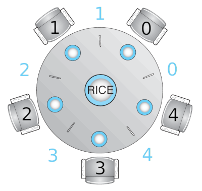

Razmig Kéchichian
This session addresses concurrent algorithm design using the classic Dining Philosophers problem as an example.
We have already examined 2 classic synchronization problems along with their solutions, namely the Bounded-Buffer problem and the Readers-Writers problem. In this session, we turn our attention to another classic, the Dining Philosophers problem for which you will be asked to draft 2 different solutions and implement one of them in Python. For more synchronization problems, some classic and some less classic, refer to The Little Book of Semaphores.
The Dining Philosophers problem is an example of synchronization problems where a number of resources have to be allocated among several processes in a deadlock and starvation -free manner.
The problem is stated as follows. Consider five philosophers who spend their time thinking and eating. The philosophers share a circular table surrounded by five chairs, each belonging to one philosopher. In the center of the table is a bowl of rice, and the table is laid with five single chopsticks. When a philosopher thinks, she does not interact with her colleagues. From time to time, a philosopher gets hungry and tries to pick up the two chopsticks that are closest to her. A philosopher may pick up only one chopstick at a time. Obviously, she cannot pick up a chopstick that is already in the hand of a neighbor. When a hungry philosopher has both her chopsticks at the same time, she eats without releasing the chopsticks. When she is finished eating, she puts down both chopsticks and starts thinking again. A solution to this problem should allow all philosophers to eventually eat without deadlocking.
Here’s a couple questions to consider before examining any solutions.
Before we proceed with solutions, let’s define a numbering scheme of philosophers and chopsticks to use in our algorithms.

Note that philosophers are numbered counter-clockwise 0 to 4. The chopstick on the left of philosopher
One idea is to represent each chopstick with a shared mutex lock. A philosopher tries to grab a chopstick by acquiring the lock. She lays down her chopsticks by releasing corresponding locks. The algorithm for philosopher
N = 5 chopstick = [Mutex() for i in range(N)] def philosopher(i): while True: think() left_stick = i right_stick = (i + 1) % N chopstick[left_stick].acquire() chopstick[right_stick].acquire() eat() chopstick[left_stick].release() chopstick[right_stick].release()
Although this solution guarantees that no two neighbors are eating simultaneously, it nevertheless must be rejected. Why?
Several solutions are possible to prevent deadlock in the above algorithm. One such solution implies defining an order of picking up chopsticks to prevent philosophers from picking up the chopstick on the same side all the time, thus breaking the deadlock pattern. Use this idea to develop the above algorithm so that no deadlocks occur while the maximum number of philosophers are allowed to eat at the same time.
Another deadlock-free solution for the Dining Philosophers problem departs from an alternative view. The restriction stating that a philosopher may eat only if both of her chopsticks are available can be also stated as: a philosopher may eat only if both of her neighbors aren’t eating. Therefore, this solution represents the 3 states each philosopher might be in: thinking, hungry (ready to eat) and eating.
class State: THINKING = 1 HUNGRY = 2 EATING = 3 N = 5 state = [State() for i in range(N)]
A philosopher State.EATING if neither of her left and right neighbors is eating:
if (state[(i + N - 1) % N] != State.EATING) and (state[(i + 1) % N] != State.EATING): state[i] = State.EATING
Philosophers who cannot proceed to eat, namely those the neighbors of whom are eating, must be put to wait. Conversely, those who can proceed to eat must be allowed to. This can be taken care of by semaphores initialized to 0, each representing a philosopher.
sem = [Semaphore(0) for i in range(N)]
Using the above elements, write a deadlock-free algorithm for philosopher
Write a multi-threaded or a multi-process Python program implementing one of the solutions to the Dining Philosophers problem. The infinite loop of philosopher threads or processes can be stopped via a shared flag initially set to True which can be set to False in the main thread or process using some timer or signaling mechanism.